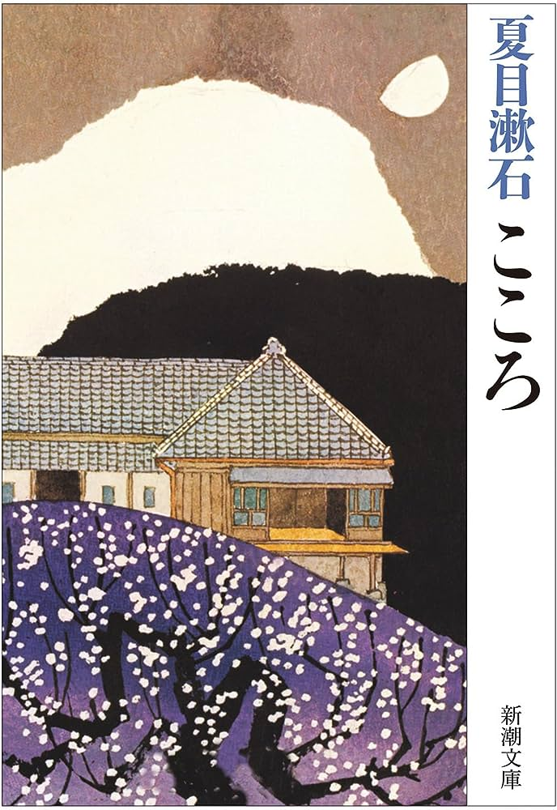
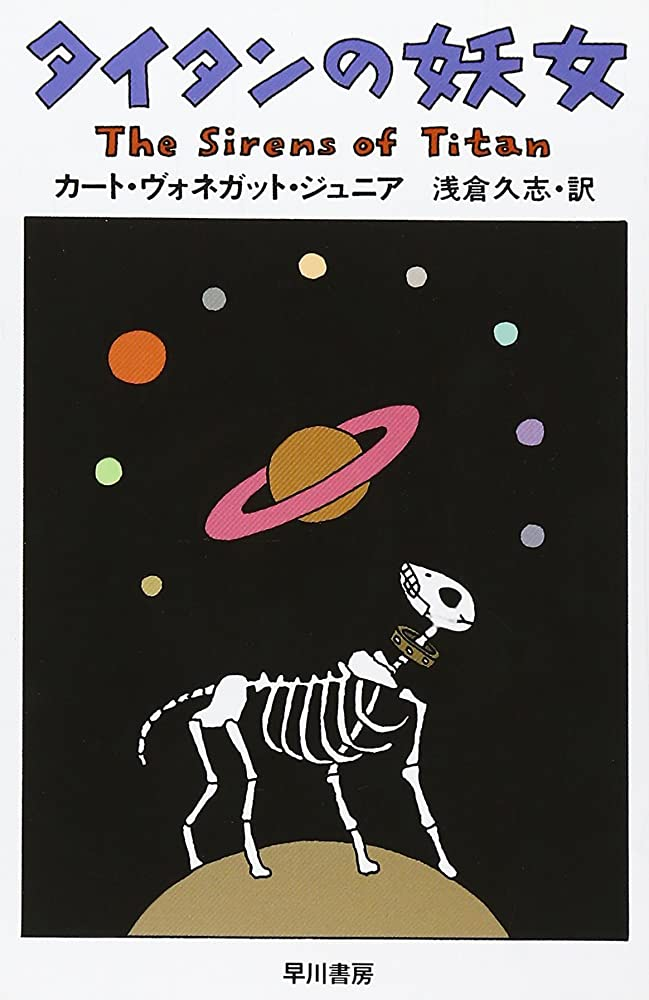
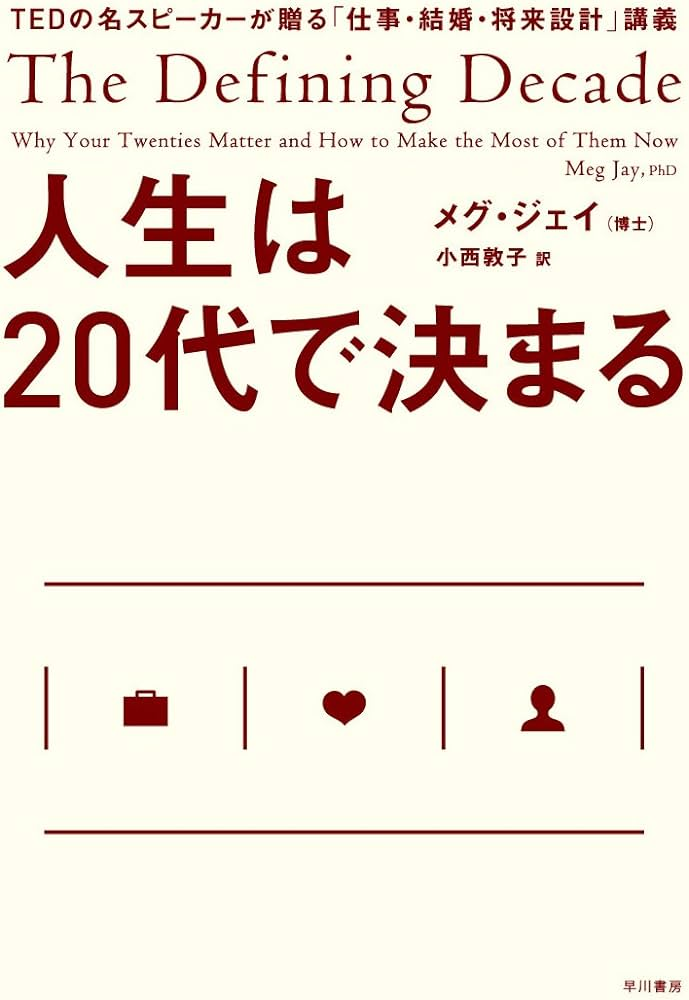

こゝろ
著者： 夏目漱石
内容
「自分は寂しい人間だ」「恋は罪悪だ」。断片的な言葉の羅列にとまどいながらも、奇妙な友情で結ばれている「先生」と私。ある日、先生から...
詳細を見る

タイタンの妖女
著者： カート・ヴォネガット・ジュニア
内容
「時空を超えたあらゆる時と場所に波動現象として存在する、ウィンストン・ナイルズ・ラムファードは、神のような力を使って、さまざまな計画を実行し、人類を導いていた。その計画で...
詳細を見る

人生は20代で決まる
著者： Meg Jay
内容
仕事選びと生涯賃金、出会いと結婚、脳と肉体の成熟―どれも20代の10年間がカギであることを知っていますか?世界的に注目を集める心理学者が、日々のカウンセリングで接する若者た...
詳細を見る